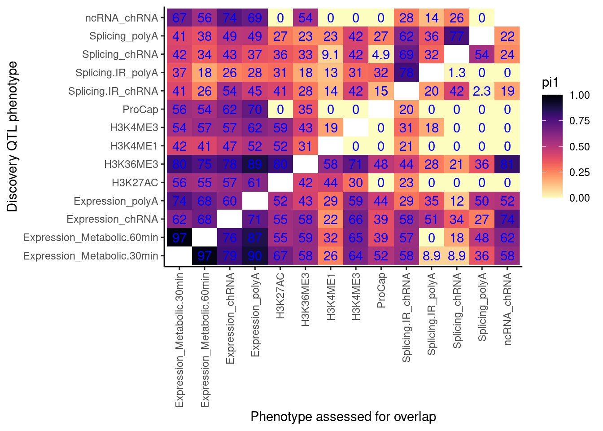

Plot heatmaps many ways
Last updated: 2022-10-07
Checks: 6 1
Knit directory: ChromatinSplicingQTLs/analysis/
This reproducible R Markdown analysis was created with workflowr (version 1.6.2). The Checks tab describes the reproducibility checks that were applied when the results were created. The Past versions tab lists the development history.
The R Markdown is untracked by Git. To know which version of the R Markdown file created these results, you’ll want to first commit it to the Git repo. If you’re still working on the analysis, you can ignore this warning. When you’re finished, you can run wflow_publish to commit the R Markdown file and build the HTML.
Great job! The global environment was empty. Objects defined in the global environment can affect the analysis in your R Markdown file in unknown ways. For reproduciblity it’s best to always run the code in an empty environment.
The command set.seed(20191126) was run prior to running the code in the R Markdown file. Setting a seed ensures that any results that rely on randomness, e.g. subsampling or permutations, are reproducible.
Great job! Recording the operating system, R version, and package versions is critical for reproducibility.
Nice! There were no cached chunks for this analysis, so you can be confident that you successfully produced the results during this run.
Great job! Using relative paths to the files within your workflowr project makes it easier to run your code on other machines.
Great! You are using Git for version control. Tracking code development and connecting the code version to the results is critical for reproducibility.
The results in this page were generated with repository version 149e3ef. See the Past versions tab to see a history of the changes made to the R Markdown and HTML files.
Note that you need to be careful to ensure that all relevant files for the analysis have been committed to Git prior to generating the results (you can use wflow_publish or wflow_git_commit). workflowr only checks the R Markdown file, but you know if there are other scripts or data files that it depends on. Below is the status of the Git repository when the results were generated:
Ignored files:
Ignored: .DS_Store
Ignored: .Rhistory
Ignored: .Rproj.user/
Ignored: analysis/.Rhistory
Ignored: analysis/figure/
Ignored: analysis/site_libs/
Ignored: code/.DS_Store
Ignored: code/.RData
Ignored: code/._.DS_Store
Ignored: code/._README.md
Ignored: code/._report.html
Ignored: code/.ipynb_checkpoints/
Ignored: code/.snakemake/
Ignored: code/APA_Processing/
Ignored: code/Alignments/
Ignored: code/ChromHMM/
Ignored: code/ENCODE/
Ignored: code/ExpressionAnalysis/
Ignored: code/FastqFastp/
Ignored: code/FastqFastpSE/
Ignored: code/Genotypes/
Ignored: code/IntronSlopes/
Ignored: code/Misc/
Ignored: code/MiscCountTables/
Ignored: code/Multiqc/
Ignored: code/Multiqc_chRNA/
Ignored: code/NonCodingRNA_annotation/
Ignored: code/PeakCalling/
Ignored: code/Phenotypes/
Ignored: code/PlotGruberQTLs/
Ignored: code/PlotQTLs/
Ignored: code/ProCapAnalysis/
Ignored: code/QC/
Ignored: code/QTL_SNP_Enrichment/
Ignored: code/QTLs/
Ignored: code/ReferenceGenome/
Ignored: code/Rplots.pdf
Ignored: code/Session.vim
Ignored: code/SplicingAnalysis/
Ignored: code/TODO
Ignored: code/Tehranchi/
Ignored: code/bigwigs/
Ignored: code/bigwigs_FromNonWASPFilteredReads/
Ignored: code/config/.DS_Store
Ignored: code/config/._.DS_Store
Ignored: code/config/.ipynb_checkpoints/
Ignored: code/debug.ipynb
Ignored: code/debug_python.ipynb
Ignored: code/deepTools/
Ignored: code/featureCounts/
Ignored: code/gwas_summary_stats/
Ignored: code/hyprcoloc/
Ignored: code/igv_session.xml
Ignored: code/log
Ignored: code/logs/
Ignored: code/notebooks/.ipynb_checkpoints/
Ignored: code/rules/.QTL_SNP_Enrichment.smk.swp
Ignored: code/rules/.ipynb_checkpoints/
Ignored: code/rules/OldRules/
Ignored: code/rules/notebooks/
Ignored: code/scratch/
Ignored: code/scripts/.ipynb_checkpoints/
Ignored: code/scripts/GTFtools_0.8.0/
Ignored: code/scripts/__pycache__/
Ignored: code/scripts/liftOverBedpe/liftOverBedpe.py
Ignored: code/snakemake.log
Ignored: code/snakemake.sbatch.log
Ignored: data/.DS_Store
Ignored: data/._.DS_Store
Ignored: data/._20220414203249_JASPAR2022_combined_matrices_25818_jaspar.txt
Ignored: data/GWAS_catalog_summary_stats_sources/._list_gwas_summary_statistics_6_Apr_2022-10.csv
Ignored: data/GWAS_catalog_summary_stats_sources/._list_gwas_summary_statistics_6_Apr_2022-11.csv
Ignored: data/GWAS_catalog_summary_stats_sources/._list_gwas_summary_statistics_6_Apr_2022-2.csv
Ignored: data/GWAS_catalog_summary_stats_sources/._list_gwas_summary_statistics_6_Apr_2022-3.csv
Ignored: data/GWAS_catalog_summary_stats_sources/._list_gwas_summary_statistics_6_Apr_2022-4.csv
Ignored: data/GWAS_catalog_summary_stats_sources/._list_gwas_summary_statistics_6_Apr_2022-5.csv
Ignored: data/GWAS_catalog_summary_stats_sources/._list_gwas_summary_statistics_6_Apr_2022-6.csv
Ignored: data/GWAS_catalog_summary_stats_sources/._list_gwas_summary_statistics_6_Apr_2022-7.csv
Ignored: data/GWAS_catalog_summary_stats_sources/._list_gwas_summary_statistics_6_Apr_2022-8.csv
Ignored: data/GWAS_catalog_summary_stats_sources/._list_gwas_summary_statistics_6_Apr_2022.csv
Untracked files:
Untracked: analysis/20220713_PlotHeatmapManyWays_JustPi1.Rmd
Untracked: code/snakemake_profiles/slurm/__pycache__/
Unstaged changes:
Modified: analysis/20220713_PlotHeatmapManyWays.Rmd
Modified: code/scripts/GenometracksByGenotype
Note that any generated files, e.g. HTML, png, CSS, etc., are not included in this status report because it is ok for generated content to have uncommitted changes.
There are no past versions. Publish this analysis with wflow_publish() to start tracking its development.
Introduction
I’ve been making heatmaps to communicate the fraction of xQTLs (eg eQTLs/sQTLs/chromatinQTLs) that colocalize with yQTLs. There are many slightly different methods I’ve been using to make this heatmap, with slightly different interpretations. In this notebook, I will make lots of those heatmaps to compare the different methods.
Here is a list of the different methods I have been using, with the names I am calling these methods. Note that for all of these methods I can consider using different statistical thresholds for calling something a QTL, so in this notebook I’ll explore that too.
- Pi1: “What is the pi1 statistic for yQTLs (ascertainment phenotype), in xQTLs (discovery phenotype)”. I can use different FDR thresholds for x (discovery phenotype)
- ColocalizationRate: “What fraction of xQTLs have at least one colocalizing yQTL”.
- ColocalizationRateAmongAttempted: “When there is both a xQTL and yQTL around the same gene, how often do they colocalize”
- SpearmanCorrealtionThreshold: What fraction of xQTLs have at least one yQTL with correlated association signal (spearman correlation coef > Treshold)
- SpearmanCorrealtionThresholdAmongAttempted: When there is both a xQTL and yQTL around the same gene, how often do they have correlation association signals (spearman correlation coef > Treshold)
library(tidyverse)
library(viridis)
library(gplots)
library(data.table)
library(qvalue)
library(purrr)
library(GGally)
library(pROC)
# pi0est function breaks sometimes. this wrapper function returns 1 when that happens
CalculatePi1 <- function (dat.in, ...) {
return(tryCatch(1-pi0est(dat.in$Pvals.For.Pi1, ...)$pi0, error=function(e) 1))
}pi1
First let’s read in data for Pi1 method
FilesChunks <- paste0("../code/scratch/PairwisePi1Traits.P.", 1:10, ".txt.gz")
dat <- lapply(FilesChunks, fread, sep='\t') %>%
bind_rows()
RecodeDat <- read_tsv("../data/Phenotypes_recode_for_Plotting.txt")
RecodeVec <- RecodeDat %>%
select(PC, ShorterAlias) %>%
deframe()
RecodeIncludePCs <- RecodeDat %>%
filter(Include) %>%
pull(PC)
colnames(dat) [1] "PC1" "P1"
[3] "GeneLocus" "p_permutation.x"
[5] "singletrait_topvar.x" "singletrait_topvar_chr.x"
[7] "singletrait_topvar_pos.x" "FDR.x"
[9] "PC2" "P2"
[11] "p_permutation.y" "singletrait_topvar.y"
[13] "singletrait_topvar_chr.y" "singletrait_topvar_pos.y"
[15] "FDR.y" "trait.x.p.in.y" I also need to simulate the null distribution to deal with the one to many problem…
MaxSampleSizeToCreateANull <- 250
NSamplesToEstimateDistribution <- 10000
NullSimulatedTestStats <- matrix(nrow=MaxSampleSizeToCreateANull, ncol=NSamplesToEstimateDistribution)
rownames(NullSimulatedTestStats) <- paste0("runif_samplesize", 1:MaxSampleSizeToCreateANull)
colnames(NullSimulatedTestStats) <- paste0("Sample_", 1:NSamplesToEstimateDistribution)
for (i in 1:MaxSampleSizeToCreateANull){
SampleSizeFromUniform <- i
SampledDat <- matrix(runif(SampleSizeFromUniform*NSamplesToEstimateDistribution), nrow=NSamplesToEstimateDistribution)
SampleDatNullTestStatistics <- -log10(apply(SampledDat, 1, min))
NullSimulatedTestStats[i,] <- SampleDatNullTestStatistics
}
NullSimulatedTestStats %>%
as.data.frame() %>%
rownames_to_column("runif_samplesize") %>%
slice(1:20) %>%
# mutate(runif_samplesize = as.numeric(str_remove(runif_samplesize, "runif_samplesize"))) %>%
gather(key="Sample", value="value", -runif_samplesize) %>%
ggplot(aes(x=value, color=runif_samplesize)) +
geom_density() +
theme_bw()
ecdf.functions <- apply(NullSimulatedTestStats, 1, ecdf)
ecdf.functions[[1]](1)[1] 0.9036Now calculate pi1
dat.split <- dat %>%
filter(PC1 %in% RecodeIncludePCs) %>%
filter(PC2 %in% RecodeIncludePCs) %>%
mutate(PC1 = recode(PC1, !!!RecodeVec)) %>%
mutate(PC2 = recode(PC2, !!!RecodeVec)) %>%
group_by(PC1, P1, PC2) %>%
mutate(test.stat.obs = -log10(min(trait.x.p.in.y))) %>%
ungroup() %>%
add_count(PC1, P1, PC2) %>%
filter(n<=100) %>%
group_by(PC1, PC2) %>%
rowwise() %>%
mutate(Pvals.For.Pi1 = 1-ecdf.functions[[n]](test.stat.obs)) %>%
ungroup() %>%
select(PC1, PC2, Pvals.For.Pi1) %>%
filter(!PC1==PC2) %>%
split(paste(.$PC1, .$PC2, sep = ";"))
dat.pi1 <- lapply(dat.split, CalculatePi1) %>%
unlist() %>%
data.frame(pi1=.) %>%
rownames_to_column("PC1_PC2") %>%
separate(PC1_PC2, into=c("PC1", "PC2"), sep=';')
pi.heatmap <- ggplot(dat.pi1, aes(x=PC1, y=PC2, fill=pi1)) +
geom_raster() +
geom_text(aes(label=signif(pi1*100, 2)), color="blue") +
scale_fill_viridis(option="A", direction = -1, limits=c(0,1)) +
coord_flip() +
theme_classic() +
theme(axis.text.x = element_text(angle = 90, vjust = 0.5, hjust=1)) +
labs(x="Discovery QTL phenotype", y="Phenotype assessed for overlap")
pi.heatmap 
Ok, there are some 0 values… Let’s check the P value distribution as histogram for these cells in the heatmap to see what’s up with pi1 estimation…
dat.split %>%
bind_rows(.id="ID") %>%
# filter(PC1 == "ProCap" & PC2 == "H3K4ME3") %>%
ggplot(aes(x=Pvals.For.Pi1)) +
geom_histogram() +
facet_wrap(~ID, scales = "free_y") +
theme_bw()Ok by in large the p value histograms look good. let’s zoom in on one of the problematic histograms.
dat.split %>%
bind_rows(.id="ID") %>%
filter(PC1 == "ProCap" & PC2 == "H3K4ME3") %>%
pull(Pvals.For.Pi1) %>%
hist(breaks=100)Ok, I could see how pi0est function might have trouble with this histogram. Let’s play with the methods parameter to see how it effects things.
dat.split %>%
bind_rows(.id="ID") %>%
filter(PC1 == "ProCap" & PC2 == "H3K4ME3") %>%
pull(Pvals.For.Pi1) %>%
pi0est(pi0.method="smoother")$pi0
[1] 1
$pi0.lambda
[1] 0.6268863 0.6020165 0.5937425 0.5969455 0.6001775 0.6078990 0.6177524
[8] 0.6269954 0.6424722 0.6605468 0.6846282 0.7169067 0.7496413 0.8149586
[15] 0.8954897 0.9921968 1.1268392 1.4137042 2.1635114
$lambda
[1] 0.05 0.10 0.15 0.20 0.25 0.30 0.35 0.40 0.45 0.50 0.55 0.60 0.65 0.70 0.75
[16] 0.80 0.85 0.90 0.95
$pi0.smooth
[1] 0.5694685 0.5696858 0.5704027 0.5723214 0.5763434 0.5835632 0.5952669
[8] 0.6129310 0.6382021 0.6728370 0.7186174 0.7772207 0.8500475 0.9380003
[15] 1.0412060 1.1588122 1.2888099 1.4278979 1.5716760dat.split %>%
bind_rows(.id="ID") %>%
filter(PC1 == "ProCap" & PC2 == "H3K4ME3") %>%
pull(Pvals.For.Pi1) %>%
pi0est(pi0.method="bootstrap")$pi0
[1] 0.6001775
$pi0.lambda
[1] 0.6268863 0.6020165 0.5937425 0.5969455 0.6001775 0.6078990 0.6177524
[8] 0.6269954 0.6424722 0.6605468 0.6846282 0.7169067 0.7496413 0.8149586
[15] 0.8954897 0.9921968 1.1268392 1.4137042 2.1635114
$lambda
[1] 0.05 0.10 0.15 0.20 0.25 0.30 0.35 0.40 0.45 0.50 0.55 0.60 0.65 0.70 0.75
[16] 0.80 0.85 0.90 0.95
$pi0.smooth
NULLOk I think the key is to use the pi0.method="bootstrap" parameter for the pi0est function. That seems to yield pi0 estimations that are more in line with what I would estimate by eye from the histogram. This publication has some detials on the difference between these two methods for estimating \(\pi_0\). My understanding in brief, is that the ‘smooth’ method uses spline fitting to estimate the \(\lambda\) parameter which defines exactly what p-value to define as 100% null tests, and the p-values less than \(\lambda\) are a mixture of null and non-null tests. If \(\lambda\) is over-estimated, then pi0 will be downwardly biased, however, it is a bias/variance tradeoff… So the smoothing fits a smooth curve to estimate \(\lambda\), assuming the the p-value distribution has the least mass at 1 (thereby making the \(\pi_0\) very sensitive to fluctuations at the right edge of the P-value histogram), whereas the bootstrap method randomly samples from the P-value vector to find an optimal balance between variance and bias for estimating \(\lambda\). In our cases where the P-value distribution is (slightly concerningly) heavy near 1 for some trait pairs, the smooth method gives wonky results, and the bootsrap method is much closer to what a human would estimate \(\pi_0\) just from eye-balling the P-value distribution.
I think the reason the P-value distribution is a bit odd for some histograms with some extra mass near one is because for cases where there are many-to-one traits mapping and I take the minimum, sometimes the many traits are not significant and also not independent, so the resulting test statistic is inflated compared to my simulated null which is drawn from truly independent samples. In general, this will may make results a tad conservative.
Anyway, let’s try remaking the heatmap and see what changed with this bootstrap method for estimating pi1.
lapply(dat.split, CalculatePi1, pi0.method="bootstrap") %>%
unlist() %>%
data.frame(pi1=.) %>%
rownames_to_column("PC1_PC2") %>%
separate(PC1_PC2, into=c("PC1", "PC2"), sep=';') %>%
ggplot(aes(x=PC1, y=PC2, fill=pi1)) +
geom_raster() +
geom_text(aes(label=signif(pi1*100, 2)), color="blue") +
scale_fill_viridis(option="A", direction = -1, limits=c(0,1)) +
coord_flip() +
theme_classic() +
theme(axis.text.x = element_text(angle = 90, vjust = 0.5, hjust=1)) +
labs(x="Discovery QTL phenotype", y="Phenotype assessed for overlap")That looks better. Now let’s recode the activiting promoter marks to either distal promoter, host-gene promoter, or distal enhancer. First read in mapping of peaks to TSS
PeaksToTSS <- Sys.glob("../code/Misc/PeaksClosestToTSS/*_assigned.tsv.gz") %>%
setNames(str_replace(., "../code/Misc/PeaksClosestToTSS/(.+?)_assigned.tsv.gz", "\\1")) %>%
lapply(read_tsv) %>%
bind_rows(.id="ChromatinMark") %>%
mutate(GenePeakPair = paste(gene, peak, sep = ";")) %>%
distinct(ChromatinMark, peak, gene, .keep_all=T)
GeneWindows <- dat$GeneLocus %>% unique()
TSSGenes <- PeaksToTSS$gene %>% unique()
length(GeneWindows)[1] 13800length(TSSGenes)[1] 28091intersect(GeneWindows, TSSGenes) %>% length()[1] 12903dat.split.added.union.activating.marks <- dat %>%
filter(PC1 %in% RecodeIncludePCs) %>%
filter(PC2 %in% RecodeIncludePCs) %>%
mutate(PC1 = recode(PC1, !!!RecodeVec)) %>%
mutate(PC2 = recode(PC2, !!!RecodeVec)) %>%
mutate(PC1 = case_when(
paste(GeneLocus, P1, sep=";") %in% PeaksToTSS$GenePeakPair ~ "ActivatingMark_HostGenePromoter",
P1 %in% PeaksToTSS$peak ~ "ActivatingMark_OtherGenePromoter",
PC1 %in% c("H3K4ME1", "H3K4ME3", "H3K27AC") ~ "ActivatingMark_Enhancer",
TRUE ~ PC1
)) %>%
mutate(PC2 = case_when(
paste(GeneLocus, P2, sep=";") %in% PeaksToTSS$GenePeakPair ~ "ActivatingMark_HostGenePromoter",
P2 %in% PeaksToTSS$peak ~ "ActivatingMark_OtherGenePromoter",
PC2 %in% c("H3K4ME1", "H3K4ME3", "H3K27AC") ~ "ActivatingMark_Enhancer",
TRUE ~ PC2
))
dat.split.added.union.activating.marks <-
bind_rows(dat.split.added.union.activating.marks,
(dat.split.added.union.activating.marks %>% filter(str_detect(PC1, "ActivatingMark")) %>%
mutate(PC1 = case_when(
str_detect(PC1, "ActivatingMark") ~ "AnyActivatingMark",
TRUE ~ PC1
))),
(dat.split.added.union.activating.marks %>% filter(str_detect(PC2, "ActivatingMark")) %>%
mutate(PC2 = case_when(
str_detect(PC2, "ActivatingMark") ~ "AnyActivatingMark",
TRUE ~ PC2
)))) %>%
group_by(PC1, P1, PC2) %>%
mutate(test.stat.obs = -log10(min(trait.x.p.in.y))) %>%
ungroup() %>%
add_count(PC1, P1, PC2) %>%
filter(n<=250) %>%
group_by(PC1, PC2) %>%
rowwise() %>%
mutate(Pvals.For.Pi1 = 1-ecdf.functions[[n]](test.stat.obs)) %>%
ungroup() %>%
select(PC1, PC2, Pvals.For.Pi1) %>%
filter(!PC1==PC2) %>%
split(paste(.$PC1, .$PC2, sep = ";"))
lapply(dat.split.added.union.activating.marks, CalculatePi1, pi0.method="bootstrap") %>%
unlist() %>%
data.frame(pi1=.) %>%
rownames_to_column("PC1_PC2") %>%
separate(PC1_PC2, into=c("PC1", "PC2"), sep=';') %>%
# filter(!(PC1=="ActivatingMark" | PC2 == "ActivatingMark") ) %>%
mutate(TextColor = case_when(
pi1 >= 0.7 ~ "white",
TRUE ~ "black"
)) %>%
ggplot(aes(x=PC1, y=PC2, fill=pi1, color=TextColor)) +
geom_raster() +
geom_text(aes(label=signif(pi1*100, 2))) +
scale_color_identity() +
scale_fill_viridis(option="A", direction = -1, limits=c(0,1)) +
coord_flip() +
theme_classic() +
theme(axis.text.x = element_text(angle = 90, vjust = 0.5, hjust=1)) +
labs(x="Discovery QTL phenotype", y="Phenotype assessed for overlap")Some of these pi1 estimates don’t make sense. When discovery QTL is “ActivatingMark_*“, pi1 assessed in”AnyActivatingMark" should be 100%… Let’s check the histograms…
dat.split.added.union.activating.marks %>%
bind_rows(.id="ID") %>%
filter(PC2 == "AnyActivatingMark") %>%
split(paste(.$PC1, .$PC2, sep = ";")) %>%
lapply(CalculatePi1, lambda=0.5, pi0.method="bootstrap") %>%
unlist() %>%
data.frame(pi1=.) pi1
ActivatingMark_Enhancer;AnyActivatingMark 0.8318326
ActivatingMark_HostGenePromoter;AnyActivatingMark 0.8733038
ActivatingMark_OtherGenePromoter;AnyActivatingMark 0.7430970
Expression_Metabolic.30min;AnyActivatingMark 0.5855742
Expression_Metabolic.60min;AnyActivatingMark 0.6085198
Expression_chRNA;AnyActivatingMark 0.5549810
Expression_polyA;AnyActivatingMark 0.5580077
H3K36ME3;AnyActivatingMark 0.7095374
ProCap;AnyActivatingMark 0.5314758
Splicing.IR_chRNA;AnyActivatingMark 0.3916971
Splicing.IR_polyA;AnyActivatingMark 0.4455069
Splicing_chRNA;AnyActivatingMark 0.3747645
Splicing_polyA;AnyActivatingMark 0.4190953
ncRNA_chRNA;AnyActivatingMark 0.4601645QvalueObj <- dat.split.added.union.activating.marks %>%
bind_rows(.id="ID") %>%
filter(PC1 == "ActivatingMark_Enhancer" & PC2 == "AnyActivatingMark") %>%
pull(Pvals.For.Pi1) %>%
pi0est(pi0.method="bootstrap")
plot(QvalueObj$lambda, QvalueObj$pi0.lambda)dat.split.added.union.activating.marks %>%
bind_rows(.id="ID") %>%
filter(str_detect(PC1, "ActivatingMark") & str_detect(PC2, "ActivatingMark")) %>%
ggplot(aes(x=Pvals.For.Pi1)) +
geom_histogram() +
facet_wrap(~ID, scales = "free_y") +
theme_bw()dat.split.added.union.activating.marks %>%
bind_rows(.id="ID") %>%
filter(PC1=="Expression_Metabolic.30min", str_detect(PC2, "ActivatingMark")) %>%
ggplot(aes(x=Pvals.For.Pi1)) +
geom_histogram() +
facet_wrap(~ID, scales = "free_y") +
theme_bw()Hmm, I suspect this is another problem like I described before where there are many non-signifant non-independent tests that make the Pvalue distribution a tad conservative when there is a one-to-many phenotype mapping. I note that Metabolic.30min vs Metabolic.60min don’t seem to have this problem, as the pi1 staistic is near 100%, and it doesn’t have a the one-to-many mapping problem. Well I am not too concerned for now, I will just have to remember that when there are many ascertainment phenotypes that get tested against each discovery, that the pi1 estimates may be a bit convervatice (smaller than truth).
Ok now make the plot with different FDR thresholds:
# Make a function to re-use
CalculatePi1Matrix <- function(dat, DiscoveryFDR=0.1){
dat.split.added.union.activating.marks <- dat %>%
filter(FDR.x <= DiscoveryFDR) %>%
filter(PC1 %in% RecodeIncludePCs) %>%
filter(PC2 %in% RecodeIncludePCs) %>%
mutate(PC1 = recode(PC1, !!!RecodeVec)) %>%
mutate(PC2 = recode(PC2, !!!RecodeVec)) %>%
mutate(PC1 = case_when(
paste(GeneLocus, P1, sep=";") %in% PeaksToTSS$GenePeakPair ~ "ActivatingMark_HostGenePromoter",
P1 %in% PeaksToTSS$peak ~ "ActivatingMark_OtherGenePromoter",
PC1 %in% c("H3K4ME1", "H3K4ME3", "H3K27AC") ~ "ActivatingMark_Enhancer",
TRUE ~ PC1
)) %>%
mutate(PC2 = case_when(
paste(GeneLocus, P2, sep=";") %in% PeaksToTSS$GenePeakPair ~ "ActivatingMark_HostGenePromoter",
P2 %in% PeaksToTSS$peak ~ "ActivatingMark_OtherGenePromoter",
PC2 %in% c("H3K4ME1", "H3K4ME3", "H3K27AC") ~ "ActivatingMark_Enhancer",
TRUE ~ PC2
))
dat.split.added.union.activating.marks <-
bind_rows(dat.split.added.union.activating.marks,
(dat.split.added.union.activating.marks %>% filter(str_detect(PC1, "ActivatingMark")) %>%
mutate(PC1 = case_when(
str_detect(PC1, "ActivatingMark") ~ "AnyActivatingMark",
TRUE ~ PC1
))),
(dat.split.added.union.activating.marks %>% filter(str_detect(PC2, "ActivatingMark")) %>%
mutate(PC2 = case_when(
str_detect(PC2, "ActivatingMark") ~ "AnyActivatingMark",
TRUE ~ PC2
)))) %>%
group_by(PC1, P1, PC2) %>%
mutate(test.stat.obs = -log10(min(trait.x.p.in.y))) %>%
ungroup() %>%
add_count(PC1, P1, PC2) %>%
filter(n<=250) %>%
group_by(PC1, PC2) %>%
rowwise() %>%
mutate(Pvals.For.Pi1 = 1-ecdf.functions[[n]](test.stat.obs)) %>%
ungroup() %>%
select(PC1, PC2, Pvals.For.Pi1) %>%
filter(!PC1==PC2) %>%
split(paste(.$PC1, .$PC2, sep = ";"))
dat.pi1 <- lapply(dat.split.added.union.activating.marks, CalculatePi1, pi0.method="bootstrap") %>%
unlist() %>%
data.frame(pi1=.) %>%
rownames_to_column("PC1_PC2") %>%
separate(PC1_PC2, into=c("PC1", "PC2"), sep=';') %>%
mutate(DiscoveryFDR = DiscoveryFDR) %>%
mutate(TextColor = case_when(
pi1 >= 0.7 ~ "white",
TRUE ~ "black"
))
return(dat.pi1)
}
dat.pi.AtThresholds <- bind_rows(
CalculatePi1Matrix(dat, DiscoveryFDR=0.1),
CalculatePi1Matrix(dat, DiscoveryFDR=0.05),
CalculatePi1Matrix(dat, DiscoveryFDR=0.01)
)
pi.heatmap <- ggplot(dat.pi.AtThresholds, aes(x=PC1, y=PC2, fill=pi1, color=TextColor)) +
geom_raster() +
geom_text(aes(label=signif(pi1*100, 2))) +
scale_fill_viridis(option="A", direction = -1, limits=c(0,1)) +
scale_color_identity() +
facet_wrap(~DiscoveryFDR) +
coord_flip() +
theme_classic() +
theme(axis.text.x = element_text(angle = 90, vjust = 0.5, hjust=1)) +
labs(x="Discovery QTL phenotype", y="Phenotype assessed for overlap", "Pi1 of xQTL among Discovery QTL classes")
pi.heatmapConsistent with the one-to-many explanation of pi1 being overly conservatice, when there are less phenotypes to map to one (ie when the 0.01 facet), the ActinvatingMark_* to AnyActivatingMark approaches 100%.
Update: let’s break out ncRNA into some subcategories
dat %>% pull(PC1) %>% unique() [1] "chRNA.Expression_cheRNA" "chRNA.Expression_eRNA"
[3] "chRNA.Expression_lncRNA" "chRNA.Expression_snoRNA"
[5] "chRNA.Expression.Splicing" "chRNA.IER"
[7] "chRNA.IRjunctions" "chRNA.IR"
[9] "chRNA.Slopes" "chRNA.Splicing"
[11] "CTCF" "Expression.Splicing"
[13] "Expression.Splicing.Subset_YRI" "H3K27AC"
[15] "H3K36ME3" "H3K4ME1"
[17] "H3K4ME3" "MetabolicLabelled.30min.IER"
[19] "MetabolicLabelled.30min.IRjunctions" "MetabolicLabelled.30min.IR"
[21] "MetabolicLabelled.30min" "MetabolicLabelled.30min.Splicing"
[23] "MetabolicLabelled.60min.IER" "MetabolicLabelled.60min.IRjunctions"
[25] "MetabolicLabelled.60min.IR" "MetabolicLabelled.60min"
[27] "MetabolicLabelled.60min.Splicing" "polyA.IER"
[29] "polyA.IRjunctions" "polyA.IR"
[31] "polyA.IR.Subset_YRI" "polyA.Splicing"
[33] "polyA.Splicing.Subset_YRI" "ProCap" Ok, I will have to update this.
sessionInfo()R version 3.6.1 (2019-07-05)
Platform: x86_64-pc-linux-gnu (64-bit)
Running under: CentOS Linux 7 (Core)
Matrix products: default
BLAS/LAPACK: /software/openblas-0.2.19-el7-x86_64/lib/libopenblas_haswellp-r0.2.19.so
locale:
[1] LC_CTYPE=en_US.UTF-8 LC_NUMERIC=C LC_TIME=C
[4] LC_COLLATE=C LC_MONETARY=C LC_MESSAGES=C
[7] LC_PAPER=C LC_NAME=C LC_ADDRESS=C
[10] LC_TELEPHONE=C LC_MEASUREMENT=C LC_IDENTIFICATION=C
attached base packages:
[1] stats graphics grDevices utils datasets methods base
other attached packages:
[1] pROC_1.15.0 GGally_1.4.0 qvalue_2.16.0 data.table_1.14.2
[5] gplots_3.0.1.1 viridis_0.5.1 viridisLite_0.3.0 forcats_0.4.0
[9] stringr_1.4.0 dplyr_1.0.9 purrr_0.3.4 readr_1.3.1
[13] tidyr_1.2.0 tibble_3.1.7 ggplot2_3.3.6 tidyverse_1.3.0
loaded via a namespace (and not attached):
[1] httr_1.4.4 jsonlite_1.6 splines_3.6.1 R.utils_2.9.0
[5] modelr_0.1.8 gtools_3.9.2.2 assertthat_0.2.1 highr_0.9
[9] cellranger_1.1.0 yaml_2.2.0 pillar_1.7.0 backports_1.4.1
[13] glue_1.6.2 digest_0.6.20 RColorBrewer_1.1-2 promises_1.0.1
[17] rvest_0.3.5 colorspace_1.4-1 R.oo_1.22.0 htmltools_0.5.3
[21] httpuv_1.5.1 plyr_1.8.4 pkgconfig_2.0.2 broom_1.0.0
[25] haven_2.3.1 scales_1.1.0 gdata_2.18.0 later_0.8.0
[29] git2r_0.26.1 farver_2.1.0 generics_0.1.3 ellipsis_0.3.2
[33] withr_2.5.0 cli_3.3.0 magrittr_1.5 crayon_1.3.4
[37] readxl_1.3.1 evaluate_0.15 R.methodsS3_1.7.1 fs_1.5.2
[41] fansi_0.4.0 xml2_1.3.2 tools_3.6.1 hms_0.5.3
[45] lifecycle_1.0.1 munsell_0.5.0 reprex_0.3.0 compiler_3.6.1
[49] caTools_1.17.1.2 rlang_1.0.5 grid_3.6.1 rstudioapi_0.14
[53] labeling_0.3 bitops_1.0-6 rmarkdown_1.13 gtable_0.3.0
[57] DBI_1.1.0 reshape_0.8.8 reshape2_1.4.3 R6_2.4.0
[61] gridExtra_2.3 lubridate_1.7.4 knitr_1.39 fastmap_1.1.0
[65] utf8_1.1.4 workflowr_1.6.2 rprojroot_2.0.2 KernSmooth_2.23-15
[69] stringi_1.4.3 Rcpp_1.0.5 vctrs_0.4.1 dbplyr_1.4.2
[73] tidyselect_1.1.2 xfun_0.31